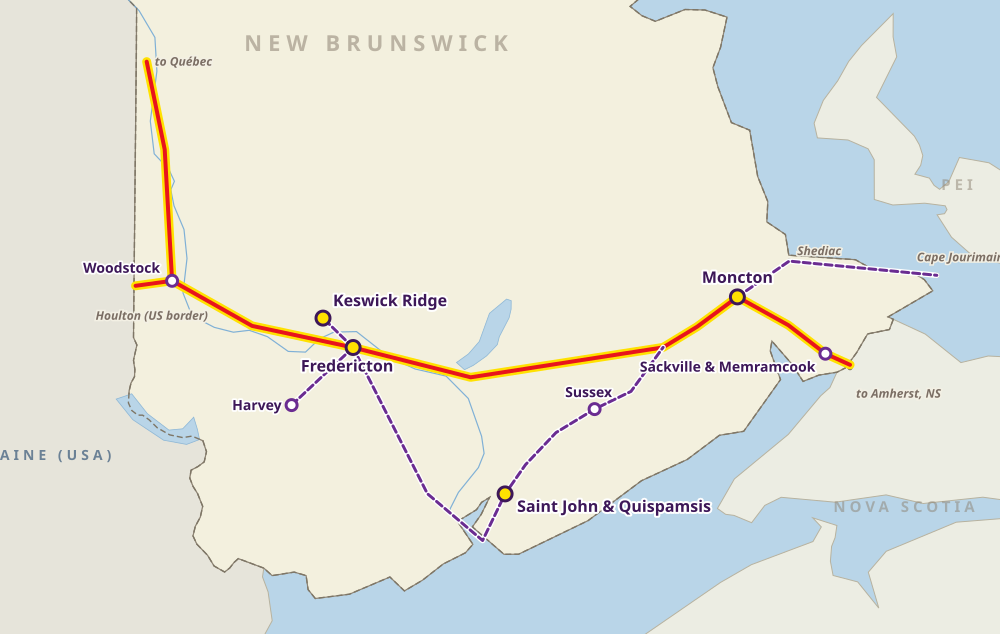

New Brunswick
Horse transport in New Brunswick
Along the Saint John River Valley, through Fredericton and Moncton and on to Nova Scotia and Prince Edward Island, Nexa Horse Transport brings horses home with care.
Our routes in New Brunswick

- Main horse communities
- Regional communities
- Main route
- Branch route
Upper Saint John River Valley
- Woodstock, Wakefield and Wilmot: Quarter Horse and western training barns near the US border
Greater Fredericton
- Hanwell, Charters Settlement and Nasonworth: boarding stables and eventing centres
- Estey's Bridge, Keswick Ridge and Harvey: English, dressage and trail riding
Kennebecasis Valley and south
- Saint John, Quispamsis and Hampton: hunter/jumper, dressage and lesson barns
- Sussex, Norton and Penobsquis: boarding, barrel racing, horse properties
Greater Moncton and Tantramar
- Moncton, Lutes Mountain and Irishtown: indoor event facilities and showgrounds
- Sackville, Memramcook and River Glade: toward Nova Scotia and PEI
Transport routes
Main route, west to east
Woodstock → Fredericton → Moncton → Sackville (Nova Scotia border)
Trans-Canada Highway (Route 2) east · about 330–360 km
Southern loop
Fredericton → Saint John / Hampton → Sussex → Moncton
Route 7 south, then Route 1 east · about 270–300 km
PEI connector
Moncton → Shediac → Cape Jourimain (Confederation Bridge)
Routes 15 and 16 · about 75–85 km from Moncton
Good to know
Barn to barn
Boarding barns and show facilities across New Brunswick. Send us the exact addresses.
Atlantic weather
We plan around coastal weather and road conditions.
Gateway to the Maritimes
Connect to Nova Scotia, PEI, Québec and our coast-to-coast run.
Preparing for transport
Tell us the number of horses, their size, loading experience and any vet or handling needs.
The booking form is a request for an estimate. Nothing is confirmed until we call or email you.
Explore our other transport services
Alberta · British Columbia · Saskatchewan · Manitoba · Ontario · Québec · Nova Scotia · Coast to coast · Long-distance across Canada
For a specific journey, request an estimate or call 1-844-491-NEXA.